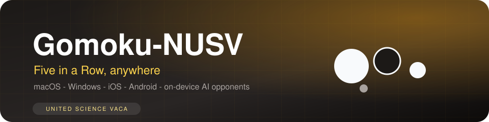

Gomoku-NUSV — technical documentation
Cross-platform Five-in-a-Row on Kotlin Multiplatform + Compose Multiplatform — one codebase for macOS, Windows, iOS, Android (and Android Automotive), with a pure-Kotlin on-device AI.
01 Stack & platform matrix
One :composeApp module shared by all targets. Desktop runs on the JVM (no Xcode needed); iOS is built from iosApp/ with Xcode.
| Platform | Min version | Distribution |
|---|---|---|
| macOS | 11 (Big Sur)+ | .dmg (ad-hoc signed, not notarized) |
| Windows | 10 (64-bit)+ | .msi via jpackage (must be built on Windows + WiX) |
| Linux | Ubuntu 20.04+ (x64) | .deb |
| iOS | 14+ | Unsigned .ipa on Releases; free-signing / AltStore / sideload guides |
| Android | API 26 (Android 8.0)+ | .apk |
| Android Automotive | API 26+ | Landscape-locked variant, separate package com.gomoku.nusv.automotive, coexists with the phone build |
iOS toolchain note: the Compose iOS target builds for arm64 devices and the arm64 simulator; the x86_64 simulator is unsupported.
02 AI engine
The engine is pure Kotlin in commonMain — no server, no network, no native code. Design:
- Threat-space search — forced moves are detected and expanded first: an immediate win, blocking an immediate win, creating an open four, and intelligently blocking an open four (choosing the point that leaves the fewest remaining threats).
- Threat pruning — when a forced move exists only it is searched, letting the same time budget reach far deeper lines (VCF-style continuation beyond the nominal depth limit).
- Incremental evaluation — only the lines affected by a move are re-scored, which keeps the search fast on low-end phones.
- Refined line scoring — open vs. blocked gradients for twos, threes and fours.
- Minimax with alpha-beta pruning and deterministic candidate ordering (reproducible games).
| Difficulty | Search | Depth |
|---|---|---|
| Easy | Heuristic with threat responses | — |
| Medium | Threat-space search | 4 plies |
| Hard | Threat-space search | Up to 8 plies on desktop / 6 on Android, 5 s vs 3 s budget; graceful truncation with a notice when the budget is exceeded |
03 LAN battle
Multiplayer over local Wi-Fi with no internet (Android + desktop; iOS shows an unsupported notice):
- Room advertising — a created room is announced over UDP broadcast with its name; joining players scan the local network and see advertised rooms.
- Session flow — waiting lobby (room name + host IP) until the opponent joins; the host presses Start Game. The board is locked until then.
- Game channel — moves, undo, restart and resign sync over TCP; leaving the game page ends the session.
04 Project layout
composeApp/src/ androidMain/ # MainActivity, SettingsFactory, LanSocket/LanDiscovery (JVM), SoundPlayer commonMain/ # game logic, AI engine, board rendering, persistence, UI desktopMain/ # desktop entry point iosMain/ # iOS entry point automotive/ # Android Automotive variant (landscape-locked) iosApp/ # Xcode project for the iOS target .github/workflows/ # linux-build.yml, windows-build.yml (tag-triggered release builders)
05 Building from source
Prerequisites: JDK 17+, Android SDK (platform 36 + build-tools 36) for the Android target; no full Xcode install for desktop builds.
./gradlew :composeApp:run # run the desktop app ./gradlew :composeApp:desktopTest # common logic + AI engine unit tests ./gradlew :composeApp:assembleDebug # Android debug APK ./gradlew :composeApp:packageDmg # macOS installer ./gradlew :composeApp:packageDeb # Linux installer (CI) ./gradlew :composeApp:packageMsi # Windows installer (Windows + WiX, CI)
macOS distribution notes: builds are signed with an ad-hoc signature and verified with codesign --verify --deep --strict after every packaging run; because they are not notarized, Gatekeeper may warn on first launch (right-click → Open, or xattr -dr com.apple.quarantine /path/to/Gomoku-NUSV.app).
06 CI & releases
Two GitHub Actions workflows (linux-build.yml, windows-build.yml) run on workflow_dispatch and on v* tags: Linux builds the DEB, Windows installs WiX and builds the MSI. Artifacts are uploaded and, on tag pushes, attached to the GitHub Release. CI uses the official Maven repositories.
07 Further reading
- README — features, themes, power-ups, shop, titles
- iOS installation guide — free-signing, AltStore, sideloading
- Changelog
- Repository